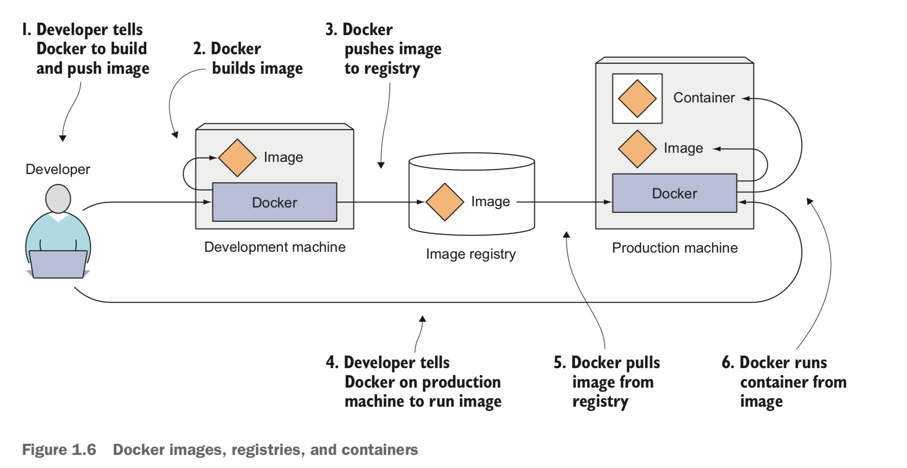

Docker
Table of Contents
| Author | Hao Ruan (ruanhao1116@gmail.com) |
| Date | 2019-03-27 16:16:50 |
Table of Contents
1 Docker 守护进程
可以使用 -H 标志调整守护进程绑定监听接口的方式
客户端也必须指定接口的变化，如: docker -H :2375 , 或者设置环境变量 DOCKER_HOST:
export DOCKER_HOST="tcp://0.0.0.0:2375"
1.1 修改守护进程的端口
docker daemon -H tcp://0.0.0.0:2375
1.2 修改守护进程的套接字路径
docker daemon -H unix://home/docker/docker.sock
2 容器操作
2.1 运行容器
2.1.1 前台运行
docker run --name my_container -i -t ubuntu /bin/bash
- -i: 保证容器中 STDIN 开启
- -t: 为容器创建伪终端
- –name: 命名必须唯一
2.1.2 后台运行
docker run --name my_container -d ubuntu <cmd>
2.1.3 公开端口
docker run --name my_container -p 80 -d ubuntu <cmd> # 将容器中的 80 端口绑定到宿主机的 8080 端口 docker run --name my_container -p 8080:80 -d ubuntu <cmd> docker run --name my_container -p 127.0.0.1:8080:80 -d ubuntu <cmd> docker run --name my_container -p 127.0.0.1::80 -d ubuntu <cmd> # 随机端口 # 公开在 Dockerfile 中通过 EXPOSE 指令公开的所有端口 docker run --name my_container -P -d ubuntu <cmd>
2.1.4 添加卷
docker run --name my_container -P -d -v $PWD/website:/var/www/html/ ubuntu <cmd> # 只读卷 docker run --name my_container -P -d -v $PWD/website:/var/www/html/:ro ubuntu <cmd> # 授权一个容器访问另一个容器的 Volume docker run --name my_container -P -d --volumes-from <cname> ubuntu <cmd>
2.1.5 指定网络
docker network create <name> docker run --name my_container -P -d --network <name> ubuntu <cmd>
2.1.6 提升权限
docker run --name my_container -P -d --previleged ubuntu <cmd>
容器对于宿主机拥有 root 权限，用于在 Docker 中运行 Docker 的场景
--cap-add=NET_ADMIN
默认 Docker 中的 root 用户的权限仍会有一定的限制，若服务需要用到小于 1024 的低位端口，需要赋予 root 更多的权限。 NET_ADMIN 是网络部分的权限 。
2.1.7 保存容器 ID 到指定文件中
--cidfile=/tmp/containerid.txt
2.1.8 进程运行完毕自动删除容器
--rm
适用于只用一次的容器
2.1.9 指定环境变量
--env MYSQL_ROOT_PASSWORD=123456
2.2 查看容器
2.2.1 正在运行的容器
docker ps
2.2.2 所有容器
docker ps -a
2.2.3 查看最后 x 个容器，不论运行或停止
docker ps -n <x>
2.2.4 查看容器中的进程
docker top <cname>
2.2.5 监控 cpu,mem,io 信息
docker stats
2.2.6 查看容器端口映射情况
如果 –network 为 host ，则无显示
docker port <cname> <port>
2.2.7 inspect
docker inspect <cname>
docker inspect -f "{{ range .Mounts }}{{.}}{{end}}" <cname>
2.3 删除容器
docker rm <cname> docker rm `docker ps -a -q` # 删除所有容器
3 Dockerfile
FROM ubuntu:14.04 MAINTAINER Hao Ruan "haoru@cisco.com" ENV REFRESHED_DATE 2017-04-19 COPY tomcat.jar /etc/ RUN ["apt-get", "-qq", "update"] WORKDIR /opt/cisco VOLUMN ["/opt/project"] ENTRYPOINT ["/usr/sbin/nginx"] EXPOSE 8080
3.1 构建镜像
3.1.1 build
docker build -t "<username>/<image_name>:<tag>" .
3.1.2 查看镜像
docker images [<username>/<image_name>]
3.1.3 查看镜像构建过程
docker history <image_hash>
3.1.4 删除镜像
docker rmi # 删除镜像 docker rmi `docker images -a -q` # 删除所有镜像
3.2 常用指令
3.2.1 CMD
Dockerfile 中只能有一个 CMD 指令生效， docker run 中的 command 会覆盖 Dockerfile 中的 CMD 指令
CMD [ "executable", "param1", "param2" ] # exec 模式 CMD command param1 param2 # shell 模式 CMD [ "param1", "param2" ] # 作为 ENTRYPOINT 指令的默认参数
3.2.2 ENTRYPOINT
如果要覆盖 Dockerfile 中的 ENTRYPOINT 指令, 则必须由 docker run -e 指定
ENTRYPOINT [ "executable", "param1", "param2" ] # exec 模式 ENTRYPOINT command param1 param2 # shell 模式
4 Docker Networking
Docker Networking 允许用户创建自己的网络，容器间通过此技术可以相互通信，包括跨越宿主机的通信（overlay 网络）
容器间可通过 <cname>.<net_name> 方式通信
docker network create <net_name> # 创建网络 docker network inspect <net_name> # 查看网络 docker network ls docker network rm <net_name> docker network connect <net_name> <cname> # 将已有容器添加到网络 docker network disconnect <net_name> <cname>
4.1 Docker 中的桥接技术
在安装了 Docker 的宿主机上的 docker0 设备就是个虚拟网桥：

Figure 1: 容器与外部通信使用 veth

Figure 2: docker0 作为桥接网卡
4.1.1 容器访问外部网络
宿主机创建一个虚拟网桥 docker0，每个容器对应一个虚拟网络设备（TAP设备）， 与 docker0 一起构成一个虚拟网络，通过虚拟网桥实现相互通信。 宿主机的物理网络设备 eth0 作为内部虚拟网络的 NAT 网关，容器通过 eth0 访问外部网络： iptables 规则类似于： iptables -t nat -A POSTROUTING -s 127.0.0.0/8 ! -d 127.0.0.0/8 -j MASQUERADE 其中 127.0.0.0/8 是内部容器的网络，如果目标地址非内部虚拟网络，则进行 NAT 转换。
4.1.2 外部访问容器内部网络
要让外部网络能够访问容器，通过 DNAT 来实现： iptables -t nat -A DOCKER ! -i docker0 -p tcp -m tcp --dport 49153 -j DNAT --to-destination 127.0.0.3:22 其中 127.0.0.3:22 是内部容器 IP 和 SSHD 端口，在宿主机上映射为 49153 端口。
4.1.3 自定义网桥
也可以使用自定义网桥 br0 ，从而使得宿主机与容器属于同一个网络，架构如图所示：

Figure 3: 自定义网桥结构图
5 Docker Save & Export
5.1 Export
用于导出容器，丢失镜像层次关系。
docker export hinaWeb > hinaWeb_Export.tar cat hinaWeb_Export.tar | docker import - local/hinaweb
5.2 Save
导出镜像，保留层次关系。
docker save ubuntu:latest > hinaWeb_Save.tar docker load < hinaWeb_Save.tar
6 Docker Compose
6.1 Compose file 示例
version: "3" services: redis.aio: container_name: "Cache_Server" image: "docker.finditnm.com/netmanager/redis:v3.2.0-2" restart: "on-failure" logging: options: max-size: "1024k" max-file: "2" volumes: - ${NM_DATA_DIR}/redis:/opt/maglev/srv/redis network_mode: "host" environment: CONFIG_DIR: /opt/maglev/etc CONFIG_FILE: /config/maglev.conf command: ["redis-server","/opt/maglev/etc/redis.conf","--maxmemory","${REDIS_MAX_MEM}mb","--bind","127.0.0.1"] mongo.aio: container_name: "Database_Server" image: "docker.finditnm.com/netmanager/mongodb:v1.0.2-3.4.9" restart: "on-failure" logging: options: max-size: "1024k" max-file: "2" volumes: - ${NM_DATA_DIR}/mongodb:/opt/maglev/srv/mongodb network_mode: "host" environment: CONFIG_DIR: /opt/maglev/config command: ["/usr/bin/mongod","--dbpath","/opt/maglev/srv/mongodb","--wiredTigerCacheSizeGB",".25","--bind_ip","127.0.0.1"] rabbitmq.aio: container_name: "Queuing_Server" image: "docker.finditnm.com/netmanager/rabbitmq:v3.6.5-2" restart: "on-failure" logging: options: max-size: "1024k" max-file: "2" volumes: - ${NM_DATA_DIR}/rabbitmq:/opt/maglev/srv/rabbitmq network_mode: "host" environment: CONFIG_DIR: /etc/rabbitmq RABBITMQ_NODE_IP_ADDRESS: 127.0.0.1 command: "rabbitmq-plugins disable --offline rabbitmq_management && /usr/lib/rabbitmq/bin/rabbitmq-server start" tomcat.aio: container_name: "FindIT_Manager" image: "docker.finditnm.com/netmanager/nm-aio-services:latest" restart: "on-failure" environment: DCLOUD: ${DCLOUD} DISABLE_NORTHBOUND: ${DISABLE_NORTHBOUND} JAVA_OPTS: -Xms${TOMCAT_JAVA_MIN_MEM}m -Xmx${TOMCAT_JAVA_MAX_MEM}m logging: options: max-size: "10240k" max-file: "2" volumes: - ${NM_LOG_DIR}:/opt/cisco/nm/log - ${NM_UPGRADE_DIR}:/opt/cisco/nm/upgrade - ${NM_DATA_DIR}/smartlic:/opt/cisco/nm/smartlic - ${NM_DATA_DIR}/backup:/opt/cisco/nm/backup - ${NM_DATA_DIR}/restore:/opt/cisco/nm/restore network_mode: "host" depends_on: - "redis.aio" - "mongo.aio" - "rabbitmq.aio"
6.2 启动
docker compose -f <compose-file> up [-d]
6.3 停止
docker compose -f <compose-file> stop
6.4 删除
docker compose -f <compose-file> rm -f
7 Internals
7.1 Images, registry and container
